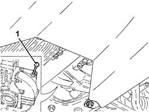
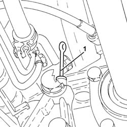
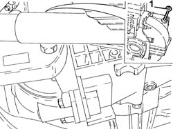

0010T41 MANUAL GEARBOX OIL - Check level and top up, if necessary
- Path
- Procedures > 00 MAINTENANCE > 0010 NEW UNITS AND PLANNED MAINTENANCE'. > 0010T vehicle oil and fluids > 0010T41 MANUAL GEARBOX OIL - Check level and top up, if necessary
- Kind
- repair procedure (removal / refitting; the operation number is the code)
- Applies to
- all engines; all production periods
- Interactive page
- https://sloeber94.github.io/elrnDB-a147/en/#/3024724
Applies to: engines: 1.6 TS, 2.0 TS; all production periods
2110A04 Manual gearbox and differential OIL - Check level and top up, if necessary
Applies to: all engines; all production periods
Applies to: engines: 1.9 JTD 8V; all production periods
Position the vehicle on the ramp.
Proceed with removal 7055B54 under-engine guard - r r .
1. Using the dipstick, check that the level of the transmission fluid for the manual gearbox and differential coincides with the reference.

Applies to: engines: 1.9 JTD 8V; all production periods
If necessary, top up the level, using the recommended fluid, through the dipstick opening.
 | Type | Component | Name | Qty. |
|---|---|---|---|---|
- | Oli [l] | ENGINE LUBRICATION CIRCUIT | TUTELA CAR ZC 75 SYNTH | 2.1 |
Check the fluid level again using the dipstick, then insert it fully.
Complete with the refitting 7055B54 under-engine guard - r r .
Remove the car from the ramps.
Applies to: engines: 1.9 JTD 16V; all production periods
Position the vehicle on the ramp.
Proceed with removal 7055B54 under-engine guard - r r .
1. Using the dipstick, check that the level of the transmission fluid for the manual gearbox and differential coincides with the reference on the dipstick.
If necessary, top up the level using the recommended fluid, through the dipstick seating.
| Type | Component | Name | Qty. |
|---|---|---|---|---|
- | Oli [l] | ENGINE LUBRICATION CIRCUIT | TUTELA CAR ZC 75 SYNTH | 2.1 |

Applies to: engines: 1.9 JTD 16V; all production periods
Check the level of the fluid once again, then return the dipstick.
Proceed with refitting 7055B54 under-engine guard - r r .
Remove the car from the ramps.
Applies to: engines: 3.2 V6; all production periods
Position the vehicle on the ramp.
Proceed with removal 7055B54 under-engine guard - r r .
1. Using the dipstick, check that the level of the transmission fluid for the manual gearbox and differential coincides with the reference on the dipstick.
If necessary, top up the level using the recommended fluid, through the dipstick seating.
| Type | Component | Name | Qty. |
|---|---|---|---|---|
- | Oli [l] | MANUAL GEARBOX | TUTELA CAR MATRYX | 2.0 |

Applies to: engines: 3.2 V6; all production periods
Check the level of the fluid once again, then return the dipstick.
Proceed with refitting 7055B54 under-engine guard - r r .
Remove the car from the ramps.
Topics linked from this page (2)
- 2110A04 Manual gearbox and differential OIL - Check level and top up, if necessary
- 7055B54 under-engine guard - r r